CSC 53439 EP
Lecture 3 - Advanced RL Topics
October 10, 2025
Outline
Part 1
Hierarchical Reinforcement Learning
Hierarchical RL
Introduction
Human analogy: planning a trip vs. walking to the station

Hierarchical RL
Introduction
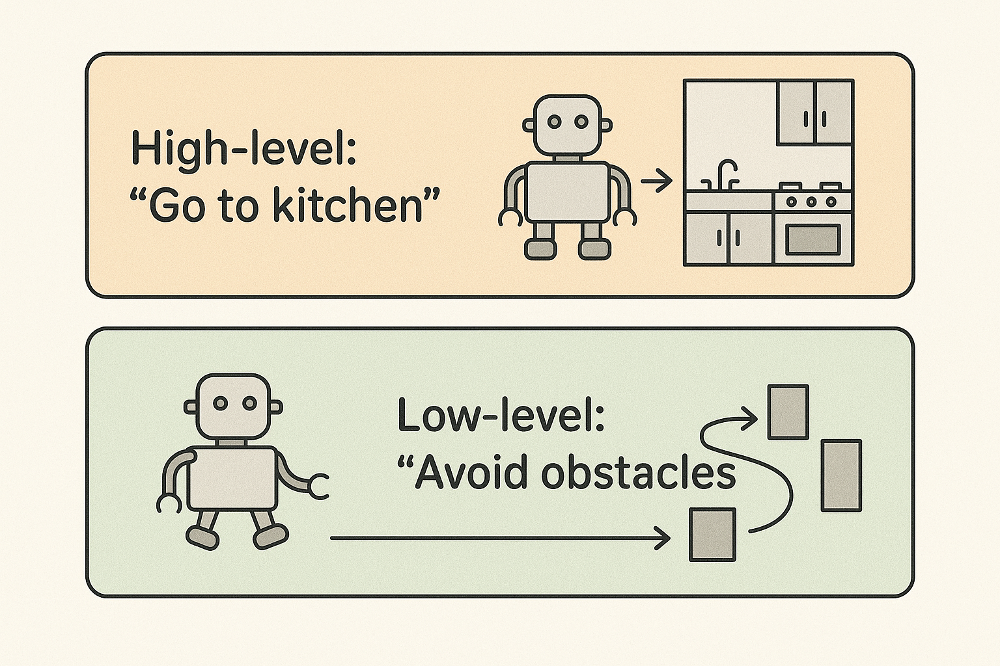
Hierarchical RL
What and Why?
- Decompose complex tasks into simpler subtasks
- Learn policies at multiple levels of abstraction
- Motivation: scalability, efficiency, transferability
Hierarchical RL
Applications
Some problems have natural hierarchical structure
- Navigation tasks: route planning + motor control
- Multi-agent systems: hierarchical team organization
- Robotics: task planning + low-level control
- Game playing: strategy + tactical execution
Hierarchical RL
Advantages
- Improved sample efficiency
- Better exploration
- Transfer and reuse of subpolicies
- Scalability to complex tasks

Hierarchical RL
Challenges
- Find subgoals
- Find a meta-policy over these subgoals
- Find subpolicies for these subgoals
The options framework
Sutton, R. S., Precup, D., & Singh, S. (1999). Between MDPs and semi-MDPs: A framework for temporal abstraction in reinforcement learning. Artificial Intelligence, 112(1-2), 181-211.
The options framework
Motivation: Temporal Abstraction in RL
- Standard MDPs only support primitive actions at each timestep.
- Need: a way to represent and learn temporally extended behaviors.
- Goal: extend RL framework minimally to include such temporal abstractions.
👉 Solution: Extend standard MDPs to support temporally extended actions called options
The options framework
What is an Option?
- Some states are designated as subgoals
- At a subgoal, the agent can choose an option (macro-action) instead of a primitive action
- Options are sequences of primitive actions grouped together
- Executing an option means executing this sequence of actions

The options framework
What is an Option?
An option $\omega$ is defined by a triple: $$\omega = \langle I, \pi, \beta \rangle$$
| $I_{\omega}$ | The initiation set $I \subseteq \mathcal{S}$ states where the option can be chosen. |
| $\pi_{\omega}(a|s)$ | The subpolicy $\pi : \mathcal{S} \times \mathcal{A} \rightarrow [0, 1]$ controls which primitive actions are taken while the option runs (here a stochastic policy). |
| $\beta_{\omega}(s)$ | The termination condition $\beta : \mathcal{S} \rightarrow [0, 1]$ tells us if $\omega$ terminates in $s$. |
The options framework
The set of all options is denoted by $\Omega$.
The options framework
There are two kinds of policies in the options framework:
- The meta-policy over options $\pi_{\Omega}(\omega|s)$, which selects which option to execute when the agent is in a state that belongs to the initiation set of one or more options.
- The subpolicy of each option $\pi_{\omega}(a|s)$, which defines the behavior while the option is being executed.
The options framework
The subpolicies $\pi_{\omega}$ are short macros to get from $I_{\omega}$ to $\beta_{\omega}$ quickly.
The options framework
"Temporal abstraction mix actions of different granularities, short and long, primitive actions and subpolicys. They allow traveling from $I$ to $\beta$ without additional learning, using a previously provided or learned subpolicy." (Plaat., 2022)
The options framework
The rooms example
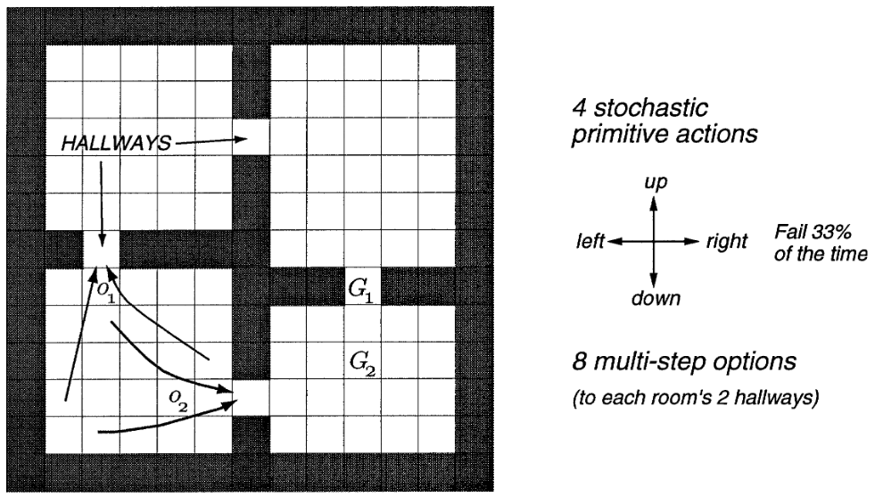
- A gridworld environment with stochastic cell-to-cell actions and room-to-room hallway options.
- Two of the hallway options are suggested by the arrows labeled o1 and o2.
- The labels G1 and G2 indicate two locations used as goals in experiments described in the text.
Finding Subgoals and learning subpolicies
In the original options framework, these elements are given:
- Subgoals
- Subpolicies
- Meta-policy
But, in practice, these components often need to be learned.
Finding Subgoals and learning subpolicies
👉 We need algorithms that can find subgoals and learn subpolicies
Some algorithms
For continuous spaces
- Feudal Networks
- Option-Critic
- HIRO
- Hierarchical Actor-Critic (HAC)
Feudal Networks
Key Idea:
- Inspired by Feudal RL (Dayan & Hinton, 1992): a Manager–Worker hierarchy.
- Manager sets abstract goals in a latent space.
- Worker executes primitive actions conditioned on these goals.
Tested on (Vezhnevets et al., 2016): Atari games
Achievements:
- Learned effective temporal abstractions (macro-actions).
- Showed faster learning and better exploration on hard sparse-reward environments compared to flat deep RL (DQN, A3C).
- Demonstrated that latent goal vectors can guide behavior without explicit subgoal supervision.
Feudal Networks
Position Today:
- Pioneered the goal-setting HRL paradigm.
- However: rarely used in practice now
- Instability in training.
- Limited scalability to very complex tasks.
- Key historical impact: introduced intrinsic goal representations and the idea of end-to-end differentiable hierarchy, still influential in modern HRL research.
References:
- Dayan, P., & Hinton, G. E. (1992). Feudal reinforcement learning. Advances in neural information processing systems, 5.
- Vezhnevets, A., Mnih, V., Osindero, S., Graves, A., Vinyals, O., & Agapiou, J. (2016). Strategic attentive writer for learning macro-actions. Advances in neural information processing systems, 29.
Option-Critic
Key Idea:
- A Policy gradient algorithm.
- Learn intra-option policies, termination functions, and a policy over options .
Tested on:
- Four-room navigation domain
- Atari 2600 (Arcade Learning Environment)
- Continuous control (PinBall)
Achievements:
- First fully differentiable framework for learning options.
- Demonstrated that options can emerge naturally without hand-crafted subgoals.
- Improved sample efficiency and exploration compared to flat RL baselines.
Option-Critic
Position Today:
- A foundational baseline for HRL; many later works extend it (e.g., option discovery, regularization, diversity constraints).
- Still conceptually influential, though modern state-of-the-art often favors skill discovery methods (e.g., DIAYN, VALOR) or hierarchical RL with pretrained skills.
References:
HIRO
Key Idea:
- Relabeling mechanism: high-level goals are retrospectively adjusted to match what the low-level actually achieved → improves sample efficiency and stability.
Tested on:
- Ant (Mujoco like).
Achievements:
- Demonstrated significant gains in sample efficiency vs. flat RL.
- Learned effective long-horizon behaviors in sparse-reward settings.
HIRO
Position Today:
- Considered a foundational baseline for HRL.
- Later methods (e.g. HAC, CHER, HIGL, HiPPO) refine stability, exploration, or scalability.
- Still cited as one of the most influential HRL approaches for continuous control with sparse rewards.
References:
- Nachum, O., Gu, S. S., Lee, H., & Levine, S. (2018). Data-efficient hierarchical reinforcement learning. Advances in neural information processing systems, 31.
- Related work: Nachum, O., Gu, S., Lee, H., & Levine, S. (2018). Near-optimal representation learning for hierarchical reinforcement learning. arXiv preprint arXiv:1810.01257.
Hierarchical Actor-Critic
Key Idea:
- Train multiple policy levels, each setting goals for the level below.
- Use Hindsight Experience Replay extended to hierarchical goals (“hindsight action transitions”) to stabilize non-stationary training.
Tested on:
- MuJoCo
Achievements:
- Can learn more than two hierarchical levels.
- Jointly learn multiple level of policies in parallel (subproblems can be solved simultaneously).
Hierarchical Actor-Critic
Position Today:
- Pioneering work: first to show multi-level hierarchical RL with hindsight replay.
- Inspired many follow-ups in hierarchical goal-conditioned RL.
References:
Hierarchical Actor-Critic
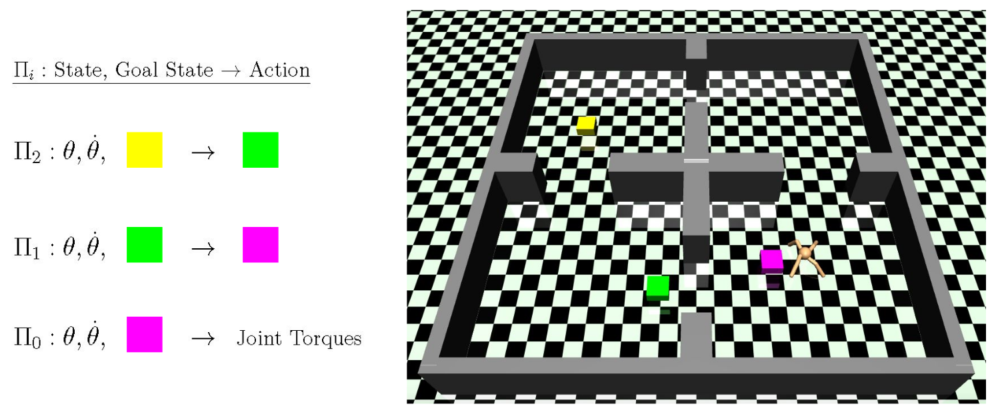
Hierarchical Actor-Critic
Examples
Part 2
Reinforcement Learning and LLMs
Overview
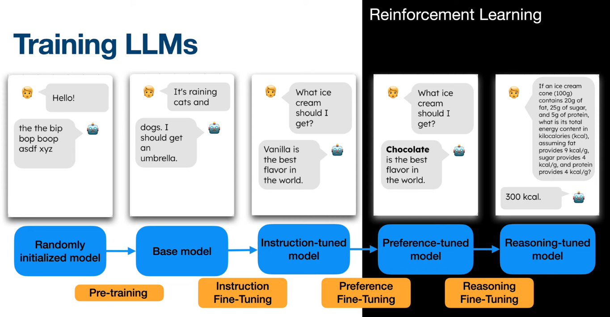
Overview
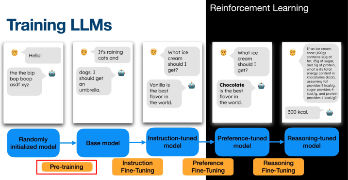
The model is first trained using self-supervised learning on a massive amount of text data.
Overview
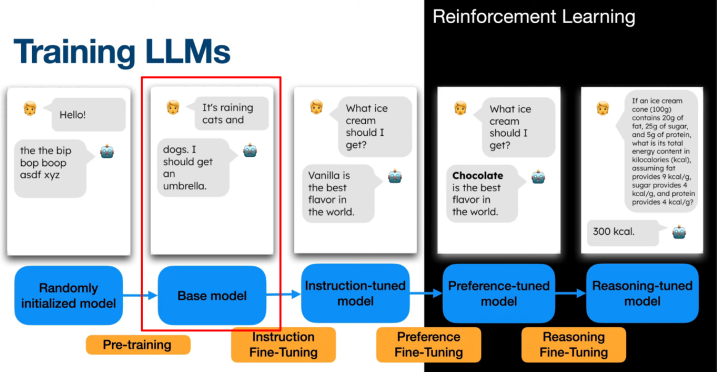
This produces a sophisticated auto-completer but cannot easily interact with humans.
Overview
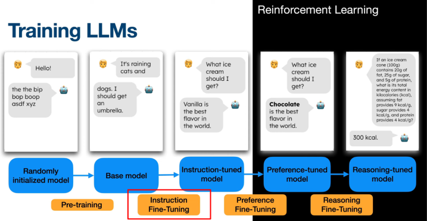
To make the model more useful we apply instruction fine-tuning or Supervised Fine-Tuning (SFT)
Overview
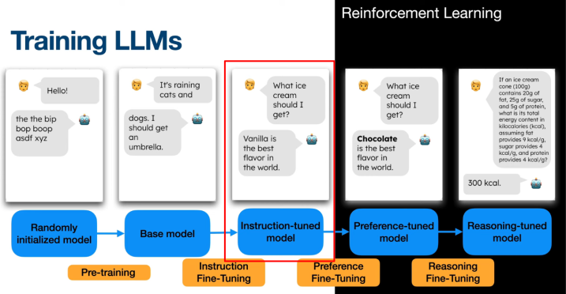
Now the model that can follow instructions, answer questions, and chat more naturally.
But it may still generate outputs that are misaligned with human preferences.
Overview
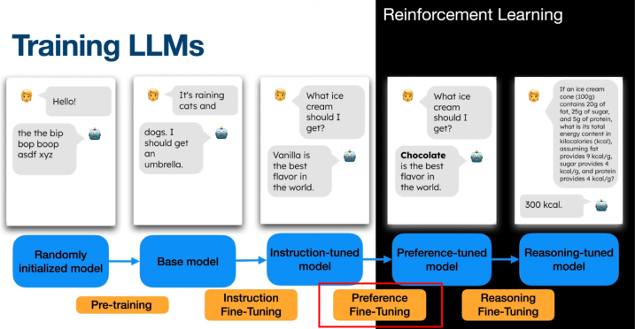
A second stage of fine-tuning is applied. Historically, OpenAI used PPO within the Reinforcement Learning from Human Feedback (or RLHF) framework to achieve this.
Preference-based fine-tuning
Motivations
Why do we need a second stage of fine-tuning?
- Supervised fine-tuning alone cannot guarantee outputs that are fully aligned with human preferences.
- Collecting larger, high-quality human-labeled datasets is too expensive or impractical.
Preference-based fine-tuning enables direct optimization for human alignment using feedback, without requiring exhaustive annotation → much cheaper.
Preference-based fine-tuning
With RLHF/PPO
Learn from feedback
A generalization of the RL framework
- RL agents need feedback to learn preferred behaviors
- Usually provided by a reward function (maps states/actions to scalar values)
- Explicit reward functions can be hard to design in real-world tasks
- Alternative feedback sources (e.g., human preferences, demonstrations) can guide learning
- This generalizes RL to "learning from feedback"
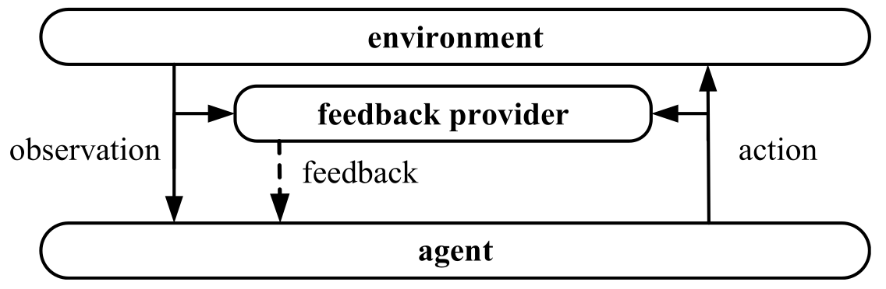
Reward Model
A quick introduction
- When a reward function is unavailable, we may learn a reward model from trajectory examples.
- Use the reward model’s output as reward signals for RL algorithms.
- This approach is known as Inverse Reinforcement Learning (IRL).
- IRL will be covered in more detail next week.
PbRL: Preference-based RL
Key Idea:
- Instead of scalar rewards, use preferences over trajectory segments as feedback.
- Train a reward model to predict which segment is preferred.
- Use the learned reward model to provide reward signals for RL algorithms.
- Enables learning from comparative feedback rather than absolute rewards.
👉 When the environment does not provide a reward function, but a preference feedback, we do Preference-based RL (PbRL).
Reinforcement Learning from Human Feedback (RLHF)
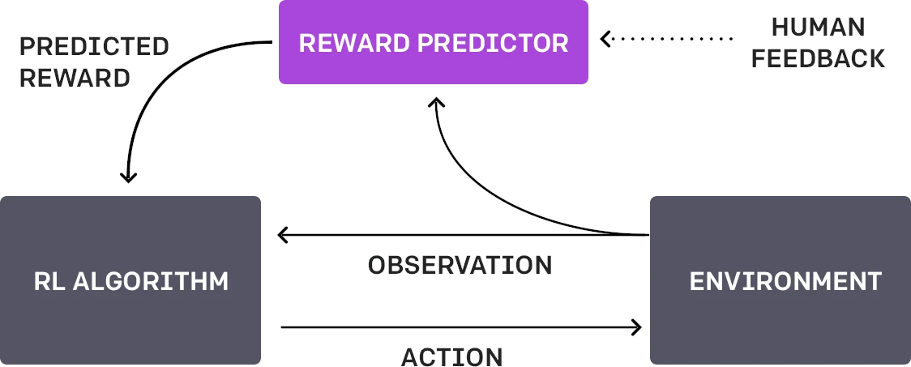
👉 When this preference feedback is provided by a human during training, we do Reinforcement Learning from Human Feedback (RLHF)
Reinforcement Learning from Human Feedback (RLHF)
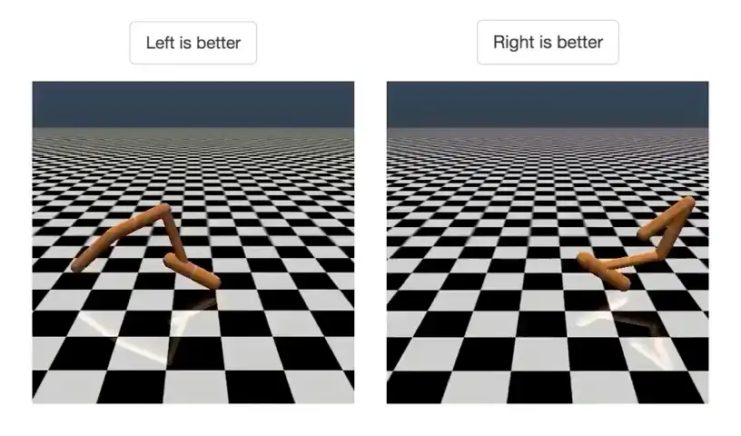
- RLHF first developed by OpenAI (2017) for training robots in simulated environments and Atari games.
- First, agent acts randomly; human compares pairs of video clips and selects the one closer to the objective (e.g., backflip).
- Algorithm learns a reward function that matches human preferences.
- Uses RL to optimize agent behavior toward the learned goal.
- Continually requests human feedback on uncertain trajectory pairs to refine the reward model.
- Demonstrates high sample efficiency: backflip task required less than 1000 bits of human feedback.
Reinforcement Learning from Human Feedback (RLHF)
RLHF
Application to LLMs
🤨- RLHF was first developed for training robots and Atari agents.
- Quickly adapted for large language models (LLMs).
- ChatGPT users regularly see feedback requests.
- User feedback is leveraged to further align LLMs via RLHF.
RLHF - Application to LLMs
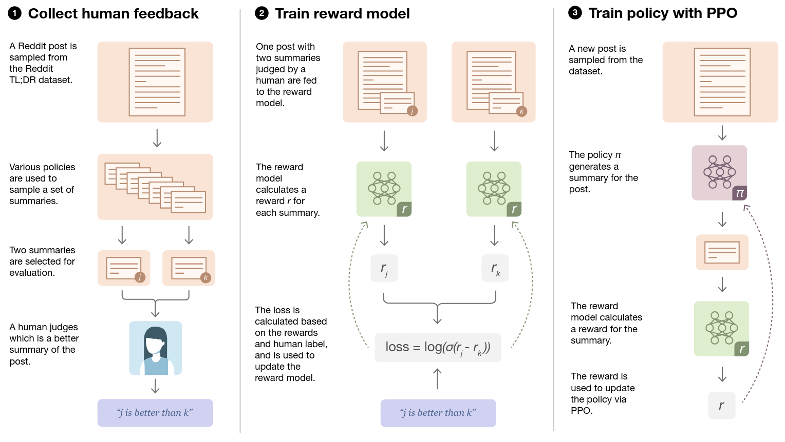
RLHF - Application to LLMs
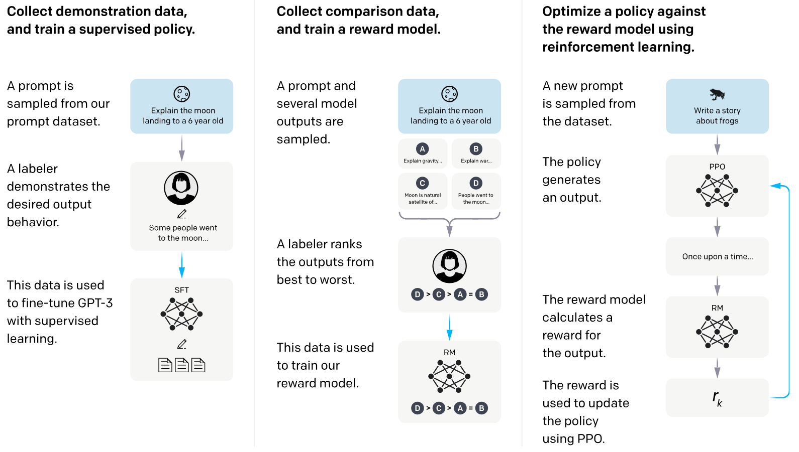
RLHF
Application to LLMs
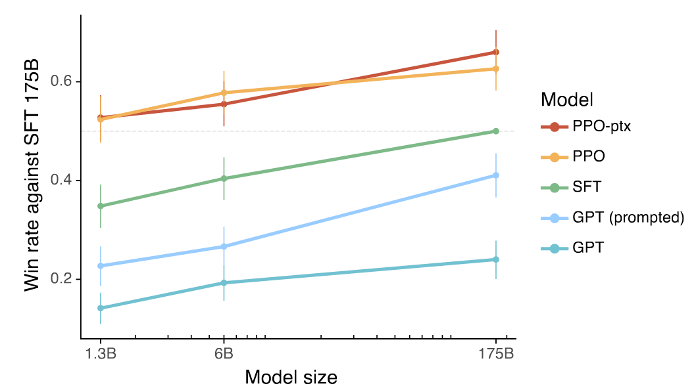
RLHF
Advantages and drawbacks
Advantage:
- Compared to alternative preference fine-tuning methods such as Direct Preference Optimization (DPO), RLHF typically requires less human feedback to reach comparable performance.
Drawbacks:
- Training can be unstable; the Reward Model may be inaccurate, leading to misaligned or unintended behaviors.
- The PPO policy may exploit Reward Model weakness (reward hacking).
RLHF
References
References:
- Christiano, P. F., Leike, J., Brown, T., Martic, M., Legg, S., & Amodei, D. (2017). Deep reinforcement learning from human preferences. Advances in neural information processing systems, 30. (OpenAI blog)
- Stiennon, N., Ouyang, L., Wu, J., Ziegler, D., Lowe, R., Voss, C., ... & Christiano, P. F. (2020). Learning to summarize with human feedback. Advances in neural information processing systems, 33, 3008-3021. (OpenAI blog)
- Ouyang, L., Wu, J., Jiang, X., Almeida, D., Wainwright, C., Mishkin, P., ... & Lowe, R. (2022). Training language models to follow instructions with human feedback. Advances in neural information processing systems, 35, 27730-27744. (OpenAI blog)
Overview
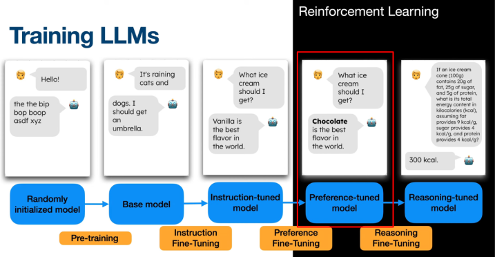
RLHF/DPO produced a model more aligned with human preferences.
But third stage or fine-tuning can be applied to improve reasoning skills.
Overview
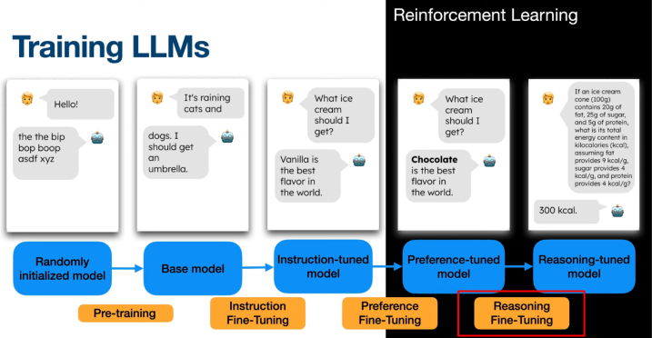
This was popularized by the open-source model DeepSeek-R1 in January 2025 with the GRPO algorithm within the Reinforcement Learning from Verifiable Rewards (RLVR) framework.
Reasoning-based fine-tuning
With RLVR/GRPO
Reasoning-based fine-tuning
Context
- Reasoning tasks (math, CS, logic) have a single correct answer and can be automatically verified.
- Unlike creative tasks, no human feedback is needed for evaluation.
- Enables automatic, scalable assessment of LLM outputs.
- DeepSeek-R1 applies a third fine-tuning stage for reasoning using RL with verifiable rewards.
Reinforcement Learning with Verifiable Rewards
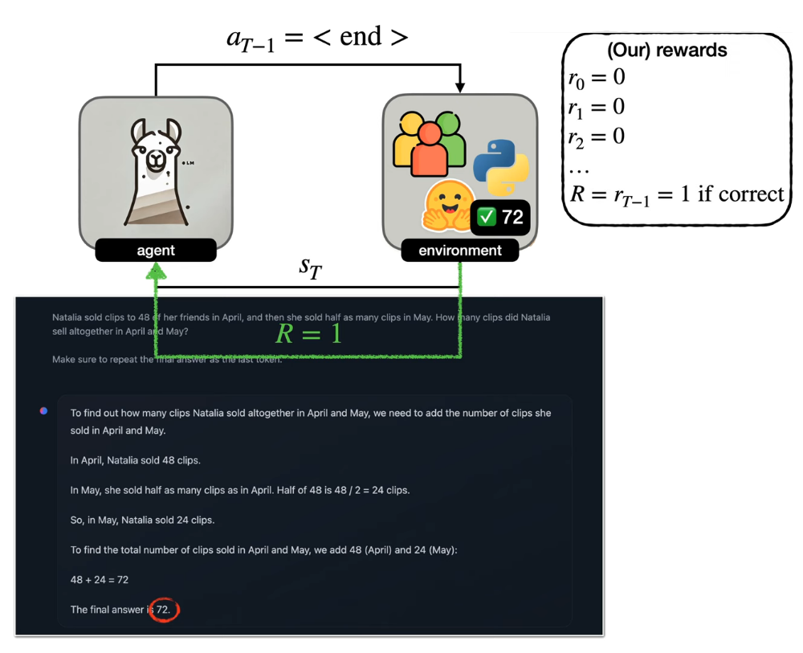
Reasoning-based fine-tuning
Group Relative Policy Optimization (GRPO)
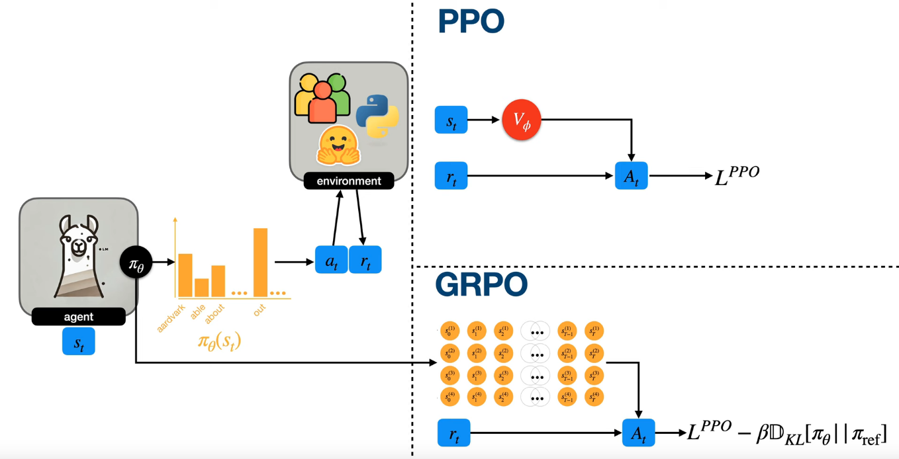
Reasoning-based fine-tuning
GRPO
$$ \theta \leftarrow \theta + \sum_{t=0}^{T-1} \nabla_{\theta} \log \pi_{\theta}(a_t \mid s_t) \cdot \bigl(G_t - b(s_t)\bigr) $$Reasoning-based fine-tuning
GRPO
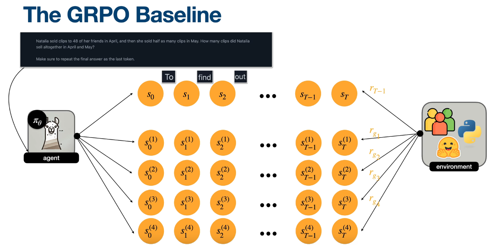
Reasoning-based fine-tuning
GRPO
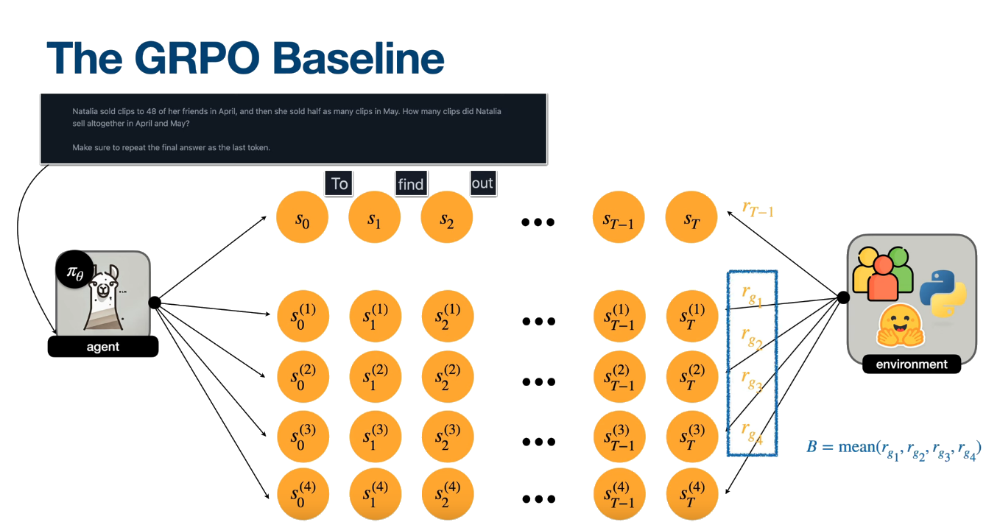
Reasoning-based fine-tuning
GRPO
$$ \theta \leftarrow \theta + \sum_{t=0}^{T-1} \nabla_{\theta} \log \pi_{\theta}(a_t \mid s_t) \cdot \bigl(G_t - b(s_t)\bigr) $$ Becomes... $$ \theta \leftarrow \theta + \sum_{t=0}^{T-1} \nabla_{\theta} \log \pi_{\theta}(a_t \mid s_t) \cdot (R - B) $$ $$ \theta \leftarrow \theta + \sum_{t=0}^{T-1} \nabla_{\theta} \log \pi_{\theta}(a_t \mid s_t) \cdot A_t $$ $$ A_t = \frac{R - \mathrm{mean}(r_g)}{\mathrm{std}(r_g)} $$
Reasoning-based fine-tuning
GRPO
$$ \begin{align} L^{PPO} &= \sum_{t=0}^{T-1} \min \Bigl( r_{\theta} \cdot A_t,\; \mathrm{clip}(r_{\theta}, 1 - \epsilon, 1 + \epsilon) \cdot A_t \Bigr) \\[6pt] r_{\theta} &= \frac{\pi_{\theta}(a_t \mid s_t)}{\pi_{\theta_{\text{old}}}(a_t \mid s_t)} \\[6pt] L^{GRPO} &= L^{PPO} - \beta \, D_{KL}\!\left[\pi_{\theta} \,\|\, \pi_{\text{ref}}\right] \end{align} $$
DeepSeek-R1-Zero
Results
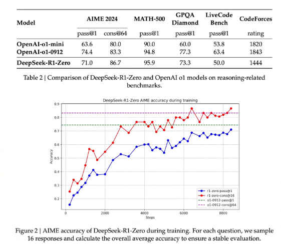
GRPO / DeepSeek-R1
References
References:
- Shao, Z., Wang, P., Zhu, Q., Xu, R., Song, J., Bi, X., ... & Guo, D. (2024). Deepseekmath: Pushing the limits of mathematical reasoning in open language models. arXiv preprint arXiv:2402.03300.
- Guo, D., Yang, D., Zhang, H., Song, J., Zhang, R., Xu, R., ... & He, Y. (2025). Deepseek-r1: Incentivizing reasoning capability in llms via reinforcement learning. arXiv preprint arXiv:2501.12948.
Practical opensource implementations
🤗 Hugging Face TRL
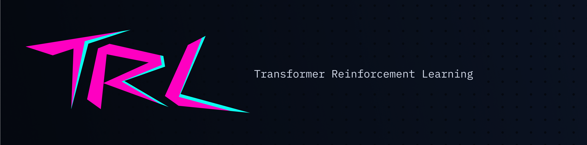
Practical opensource implementations
🤗 Hugging Face TRL
"TRL is a full stack library where we provide a set of tools to train transformer language models with methods like Supervised Fine-Tuning (SFT),
Group Relative Policy Optimization (GRPO),
Direct Preference Optimization (DPO),
Reward Modeling, and more.
The library is integrated with 🤗 transformers."
https://huggingface.co/docs/trl/
Practical opensource implementations
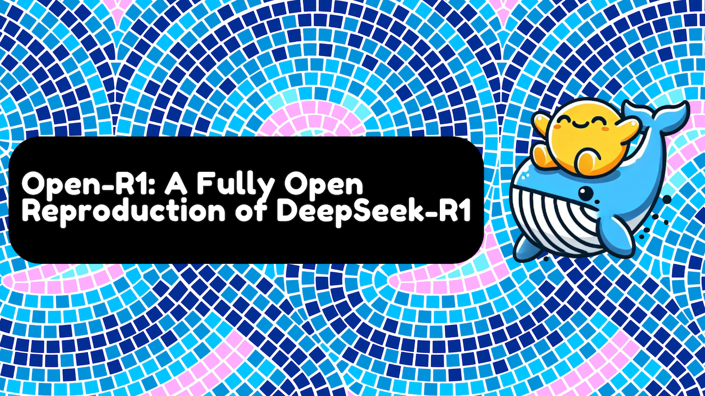